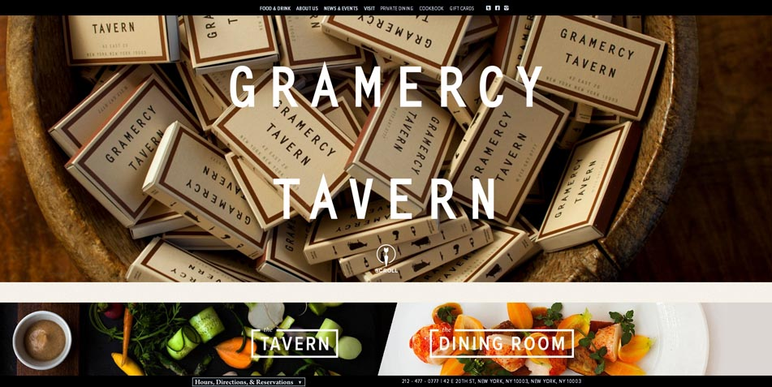
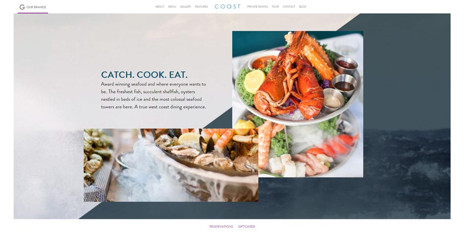
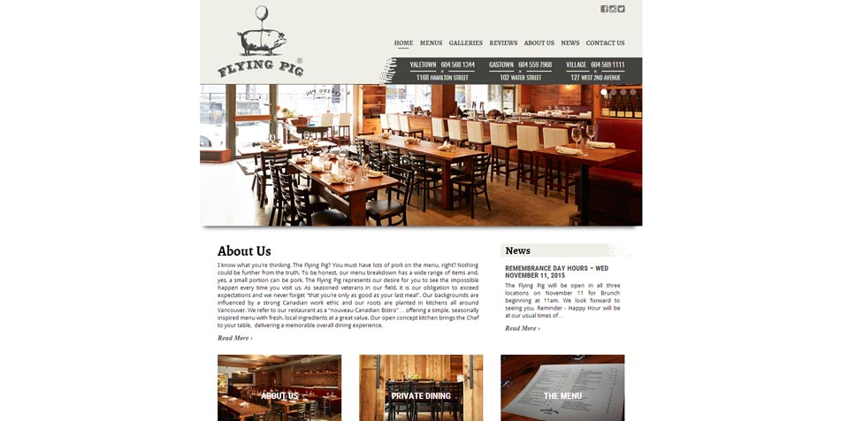
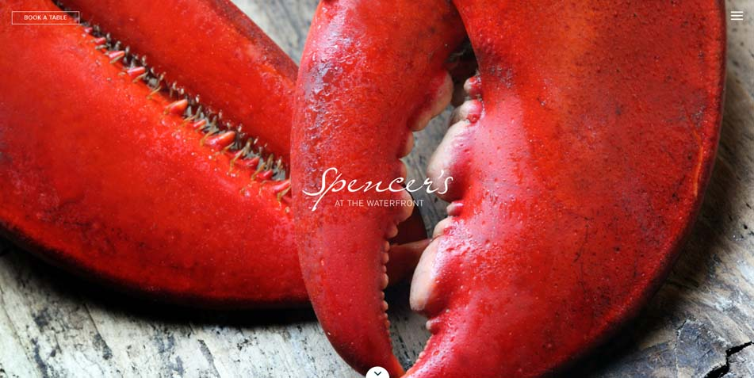
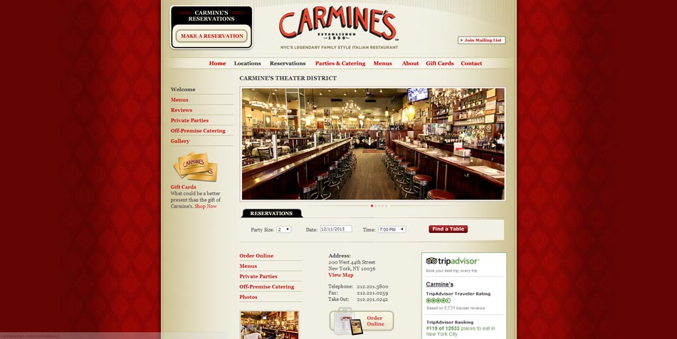

I like this website because it seems like it’s very inviting. It feels captivating and there’s not too much going on in it. The big, bold images tell me what I need to know about the restaurant and I feel like I get the general vibe of the restaurant from the landing page alone.

I like this restaurant landing page because it tells you everything you need to know without it being an information overload. I like how it’s quite longer than the other landing pages, but it is sectioned off in a way so that you can only see a section at a time. The copy is very well written and I also enjoy the buttons when it comes to the private dining buttons.

I enjoy this landing page because like the rest of the restaurant pages, the big and beautiful images are captivating. The copy is short and to the point, which I also love. The text and the layout looks great together. I especially love the cute little pig to the left of the navigation tab!

I like this page because it really gives off that elegant vibe. I love the little informational blog tabs in the middle of the homepage. The simplistic copy in this case really helps, because less is definitely more in this case! This homepage has beautiful images that all connect well together.

I enjoy this page considering it’s old fashioned font and colors. I like how one of the first things you see on the homepage is how you can set up a reservation. I enjoy how it is set up so that you can easily get a reservation or get food delivered, which I’m sure is something many people would want easy access to. It puts everything you easily want to find right on the main page, which is ideal.